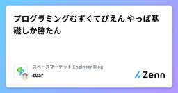

スペースマーケット Engineer Blogのフィード
https://zenn.dev/p/spacemarket
スペースを簡単に貸し借りできるサービス「スペースマーケット」のエンジニアによる公式ブログです。 弊社採用技術スタックはこちら -> https://www.whatweuse.dev/company/spacemarket
フィード

プログラミングむずくてぴえん🥺やっぱ基礎しか勝たん 2
2
スペースマーケット Engineer Blogのフィード
おはこんばんちは〜（定番の挨拶）スペースマーケットでWebエンジニアをしています、s0arです。ついに日本から四季は消えました。完全に三季です。秋さん、クビ！ｗこの記事はそんなクソ寒い季節にも半袖短パンで元気にプログラミングしているそんな皆さんへ贈る、エンジニア歴12年新米おじさんからのクリスマスプレゼントです。プログラム書いてると、ふとした瞬間に「なんで動いてるかわからん」みたいなことないですか？あとは、ちょっとプログラミングできるようになったら、アーキテクチャとかに興味が湧いていろいろと学びたくなったりしませんか？しますよね？しろ。してくださいお願いします。而し...
5日前

DDD における timestamp（createdAt / updatedAt）の扱い方 ― ドメインと永続化の分離
スペースマーケット Engineer Blogのフィード
DDD（ドメイン駆動設計）でエンティティを設計していると、つい反射的にcreatedAt や updatedAtを持たせてしまいがちです。しかし、それらは本当にドメインの関心ごとなのでしょうか？こんにちは、しがないエンジニアの k_y16 です。本記事では、timestamp（createdAt / updatedAt）をドメインから分離すべき理由 と、責務の分離をどう実現するかをまとめます。 createdAt / updatedAt は何を表しているのか？「申込」を例にすると、そこには2種類の "日時" が存在します。 ドメインの事実appliedAt→...
11日前
アンチパターンを採用したあの日
スペースマーケット Engineer Blogのフィード
アンチパターンを採用したあの日――データ量の爆発と、機能に閉じた設計の話こんにちは、しがないエンジニアの k_y16 です。「あ、それアンチパターンですよね」——その一言に、静かに心が折れかけた。でも、わかってるんです。きれいなDB設計のほうが正しい。正規化は美しいし、SQLの教科書にはきっと「その設計はやめよう」と書かれている。それでも私は、アンチパターンを採用しました。なぜかって？きれいな設計にしたら、DBが死ぬ未来が見えたからです。（正確には、DBもアプリもエンジニアも一緒に死ぬやつ。）この記事は、そんな「理想よりも現実を取った日」の記録です。自分...
24日前
NestJS のフィルタは LIFO で評価される
スペースマーケット Engineer Blogのフィード
NestJS の Filter を使って例外処理のハンドリングを行っている方は多いのではないでしょうか。先日、複数の Filter を併用した際に登録順を誤り、意図しない挙動に遭遇しました。この記事では、正しい実行順（LIFO）とその理由、そして安全な並べ方をまとめます。 複数 Filter を使うときに起きたこと個別の例外と全体の例外を分けて管理したいなど、複数の Filter を運用したくなる場面は珍しくありません。未ハンドリングの例外について @sentry/nestjs の SentryGlobalFilter を使って Sentry に送信したい一方で既知の独自...
1ヶ月前
ダニから学ぶ設計思想──環世界と確実に動けるチーム
スペースマーケット Engineer Blogのフィード
こんにちは、しがないエンジニアの k_y16 です。最近『生き物から見た世界』（ユクスキュル著）を読みました。この本に出てくる「環世界（Umwelt）」という概念が、設計やプロジェクト運営、さらには組織のあり方にまで通じるものだと感じました。“環世界はそれぞれの生き物に固有であり、他の存在の世界を共有することはできない。”── ユクスキュル『生き物から見た世界』 🐜 ダニの世界：シンプルさは確実性を生むユクスキュルが描く代表的な例に、ダニがあります。ダニの世界は驚くほど単純です。彼らが感じ取るのは、わずか三つの刺激だけ。光の変化（高いところへ登るため）匂い...
2ヶ月前
Claude Codeの品質が不安定？OpenCodeに乗り換えて1週間使ってみた
スペースマーケット Engineer Blogのフィード
こんにちは！スペースマーケットのjinです😎最近、さまざまなAI開発ツールやMCPを試す中で、特に気に入ったOpenCodeの使用感をまとめました。使う前は「複数のAIモデルを扱えるオープンソースのツール」という認識でしたが、私の環境では先週の実使用でCodex CLIやClaude Codeよりも一段満足度の高い開発体験を得られました。以下はあくまで個人の体験に基づく所感です！https://opencode.ai/ あくまで個人的なCodexの課題レスポンスが全体的に遅めに感じる対話感が希薄に感じられる場面があるレスポンスが遅いと思考の連続性が途切れやすい生成...
2ヶ月前
AI時代にVimを学ぶ意味 - Vim初心者が過ごした夏の記録
スペースマーケット Engineer Blogのフィード
はじめにこんにちは。株式会社スペースマーケットで内定者インターンをさせていただいているh4luです。この夏密かに触っていたものがあります。それがタイトルにもあるように「Vim」です。と言っても、触っているのは純正のVimではなくVSCode及びObsidianでVimプラグインを入れて遊んでいるだけですが。まずはVimに慣れようということで、普段から使っているアプリケーションにVimらしさを取り入れてみました。本記事では、Vim初心者が実際に使ってみて気づいたことや感じたことを、率直にお伝えしていきます。対象読者：Vim...聞いたことはあるけど...という方エデ...
2ヶ月前
エンジニアの時間術：知的生活のすすめを今に生かす
スペースマーケット Engineer Blogのフィード
こんにちは、しがないエンジニアの ky16 です。最近、ハマトンの『知的生活のすすめ』を読んだのですが、そこで改めて「時間の使い方って大事だな」と思わされました。エンジニアの毎日は、コードだけじゃなくて設計・調査・レビュー・MTG…と本当にいろいろ。だからこそ「時間をどう切り分けるか」で、生産性も気持ちの余裕も全然変わってくるんですよね。今回はハマトンの考えをヒントに、私が普段やっている時間の使い方をまとめてみます。 時間は「質」で決まる（集中のゴールデンタイム）ハマトンは「時間は長さじゃなく質で決まる」と言っています。私の場合、一番頭が冴えているのは朝。誰にも邪魔されな...
2ヶ月前
知らない機能に迷子にならない調査術 ー AIがコードを書く今、調査力は人間の武器になる
スペースマーケット Engineer Blogのフィード
こんにちは、しがないエンジニアの k_y16 です。 はじめに入社したばかりや大きなサービスに関わると、「触ったことない機能を調べて」と言われることがよくあります。正直ビビりますよね。でも大事なのは知識量やカンではなく、順序を飛ばさず事実を積み上げることです。焦っていると、とりあえずDBを直接開いたり、関連しそうなコードを片っ端から読んでしまったりしがちです。あるいは社内のドキュメントや古いWikiを参考にするけれど、今はもう違う仕様で「全然関係なかった…」ということも多い。そんな時こそ「順序を守る」ことが一番の近道になります。 1. 仮説を無理に立てない知らない領域...
2ヶ月前
エンジニア組織における美徳の光と影
スペースマーケット Engineer Blogのフィード
はじめにこんにちは、しがないエンジニアの k_y16 です。「技術力が高い」。エンジニアにとってこれほどポジティブに響く言葉はないかもしれません。私自身、そう評されることがあれば素直にうれしいし、目指したい状態でもあります。けれど、幸福論的な思索に触れていて気づきました。“良きもの”にも必ず影はあるということです。お金や権力のようにわかりやすいものだけでなく、技術力や優しさですら例外ではない――そんな思考が頭をよぎりました。 善と悪はコインの裏表幸福論の議論ではしばしば、善と悪は絶対的に分かれるものではなく、コインの表裏のように切り離せないとされます。豊かさ...
2ヶ月前
AIコーディングツール3選：Claude Code、Codex、Cursorの使い分けと分業術
スペースマーケット Engineer Blogのフィード
こんにちは！スペースマーケットのjinです😎AIコーディングツールが雨後の筍のように登場する中、開発者はどのツールを選ぶべきか、そしてそれぞれをどう活用すべきか、という嬉しい（そして苦しい）悩みを抱えることになりました。私も様々なツールを試行錯誤しながら使ってみて、自分なりの分業体制を確立することができました！現在私が主力として使用しているツールは、Claude Code、Codex、そしてCursorです。もちろんAIモデルとツールの優劣や特性はいつでも変わる可能性があるため、この記事は2025年9月時点での個人的な経験を共有するものであることを、はじめにお断りしておきます。...
2ヶ月前
ソクラテスが現代エンジニアにツッコミ？プレイングマネージャーの葛藤
スペースマーケット Engineer Blogのフィード
こんにちは、しがないエンジニアの k_y16 です。最近『国家（こっか）』という古代ギリシャの本を読んでみました。著者はプラトン、語り手はソクラテス。ざっくり言うと「正義とは何か」「理想の国家はどうあるべきか」を延々と語り合う対話篇です。正直、読んでいると「いや、その議論まだ続くの？」とツッコミたくなる場面も多々あります（笑）。でも、そんなやり取りが逆に人間くさくて面白いんですよね。読み進めるうちに、「古典を軸にすると、現代の働き方って意外と見直せるところがあるんじゃないか」と感じる瞬間がありました。今回のブログでは、プレイングマネージャーという役割について、具体的な実務の話で...
2ヶ月前
なんでなんだよRuby――初めて触って混乱したポイント5つ
スペースマーケット Engineer Blogのフィード
こんにちは、しがないエンジニアの k_y16 です。Rubyを触り始めてまだ日が浅いのですが、「え、そうなるの！？」という瞬間が多すぎて笑ってしまったので、備忘録がてらまとめます。温度感としては「なんでなんだよ」寄りです。 1. 本当に型がないこれは定番ですね。TypeScriptやJavaの世界から来ると「型って絶対いるでしょ」という感覚があるんですが、Rubyにはない。戻り値の型も引数の型も誰も保証してくれない。その結果「これnil返ってこないよね？」みたいな心配を常にすることに…。 2. importとかuseとかなくても動く「このクラスどこから来た？」っ...
3ヶ月前
Prisma で作る ActiveRecord ライクな in_batches: 大量データを効率的に処理しよう
スペースマーケット Engineer Blogのフィード
Ruby on Rails の ORM である ActiveRecord には、in_batches という便利なメソッドがあります。これは大量のレコードを一度にメモリにロードすることなく、 ほどよい塊 で少しずつ処理するためのメソッドです。// 1000件ずつ読み込んで処理User.in_batches(of: 1000) do |batch| batch.each do |user| # 各ユーザーに対する処理をここに記述 endendもし User.all.each のように書いてしまうと、大量のレコードを読み込んだ場合にメモリを無駄に消費してしまい、パフ...
3ヶ月前
「エンジニアじゃないのに書けるのすごい！」から始まったレビューの工夫
スペースマーケット Engineer Blogのフィード
こんにちは、しがないエンジニアの k_y16 です。最近、GAS や Colab を使って業務のちょっとした自動化スクリプトを書く非エンジニアの方が増えてきました。ここでいう「非エンジニア」とは、普段はバックオフィスやマーケティングなど別業務を担当しているけれど、必要に応じて自動化に挑戦しているメンバーを指しています。エンジニア同士のレビューと違って、Git 管理やレビュー文化が整っていないケースも多く、運用を見据えた作りになっていないこともしばしば。だからこそ「どうレビューすればいいんだろう？」と迷う場面が多くありました。正直めちゃくちゃありがたいですし、いつも助かってます！...
3ヶ月前
[NestJS] middleware を超えて ─ fastify hook でつくるリクエストロギング実装
スペースマーケット Engineer Blogのフィード
「リクエストロギングなら、middleware でやればいいのでは？」という声が聞こえてきそうですが、確かにそのとおりです。NestJSでリクエストのロギングを実装するなら、 middleware を使うのがもっとも一般的な選択肢でしょう。しかし、もしあなたがHTTPアダプターに fastify を採用しているなら、その middleware は裏側で fastify の hook を使って実行されていることをご存知でしょうか？本記事では、middleware / hook と interceptor の役割の違いGraphQL専用だったロギングを、REST APIと共通化...
3ヶ月前
生成AIの喧騒から離れて — 特別な成果を生む、Webエンジニアの「地味な習慣」
スペースマーケット Engineer Blogのフィード
!この記事のタイトルは生成AIが考えました最初の一文から、タイトルと矛盾していますね。どうもこんにちは。スペースマーケットのrokioです。最近Kiroの登場、そしてClaude Codeのレートリミットなど、生成AIにまつわる話題が尽きませんね。そしてそんなめまぐるしい変化にちょっと疲れてきている自分がいます🥲そんな中、社内の会話でイチローさんの名言がスッと登場しました。「特別なことをするために、特別なことをするのではない。特別なことをするために、普段通りの当たり前のことをする」https://president.jp/articles/-/14958?page...
4ヶ月前
Claude Codeを使い始めた人向けの効率化ガイド
スペースマーケット Engineer Blogのフィード
こんにちは！スペースマーケットのjinです🐶Claude Codeを使い始めたけれど、なんとなく質問機能しか使えていない…そんな方も多いのではないでしょうか？（一週間前の私の話ですが）今回は、Claude Codeの効率化テクニックを、実際の使用例とともにまとめてみました。公式ドキュメントでは目立たないものの、知っていると開発効率が大幅に向上する機能ばかりです！ 1. @ファイルタグ@記号を使うことで、ファイルの全体パスを知らなくても素早くファイルを参照することができます。ファイル選択の効率化: @後ファイル名を入力すると、ファイル一覧が表示され、上下矢印キーで目的のフ...
4ヶ月前
振り返りの習慣を作る
スペースマーケット Engineer Blogのフィード
はじめにこんにちは。WebエンジニアのShotaです！最近、「毎日の振り返りを習慣にしたいのに、なかなか続かないな」と悩むことがありました。フォーマットを決めても書き忘れてしまったり、何を書けばいいか迷って手が止まってしまったり。そんな中で、効果的な振り返りのやり方や、無理なく続けるためのテクニックをいくつか学びました。この記事では、実践しやすく効果的な振り返り方法と、習慣化するためのコツをご紹介します。「振り返りを続けたいけどうまくいかない」と感じている方のヒントになれば嬉しいです。 なぜ振り返りが続かなかったのか弊社ではスクラム開発を採用しており、チーム内で週に...
4ヶ月前
スペースマーケットの Rails to NestJS 移行の現在地。そしてこれから。
スペースマーケット Engineer Blogのフィード
私たちスペースマーケットが4年前から進めている 「Ruby on Rails から NestJS への移行プロジェクト」。一時期、その進捗は残念ながら進んでいるとは言えない状態でした。過去の登壇や採用資料でも「NestJS へ技術スタックを移行中です」と発信してきておりました。https://speakerdeck.com/spacemarket/engineer?slide=37その裏側では、日に日に重くなる技術的負債と、進まない移行への静かな焦りが渦巻いていたのです。この4年間、私たちの開発現場で一体何があったのか。そして、一度は止まった歯車が、なぜ今、再び力強く回り始め...
4ヶ月前